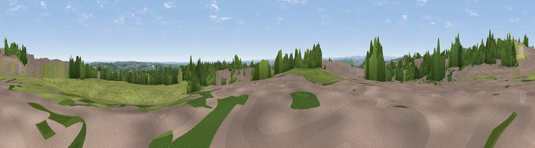

Viewpoint near Horsforth
#32825 in England · top 65% of its area beats it · near HorsforthWhere it is
The exact computed spot (SE 25575 39625). Click the marker for map links.
The view, rendered

A 360° render of this exact spot computed from the terrain model, tree cover and land cover — summer colours, afternoon light, calibrated against photographs of famous viewpoints. Real trees, hedges and buildings will differ in detail.
The panorama
Grey silhouette: terrain skyline in each direction (720 bearings, Earth curvature and refraction included). Dashed green: skyline with trees (+15 m) and buildings (+8 m) as obstacles. Blue strip: how far the ground is visible on each bearing.
Where the view opens
Wedge length = distance to the farthest visible ground on that bearing (vegetation-aware). Rings at 10, 25 and 50 km.
What fills the view
42% grassland · 32% woodland · 24% built-up · 2% cropland
Angular shares of the visible panorama (visual magnitude), not map area. Landscape diversity 0.50 (0–1 Shannon).
Key numbers
More beautiful places nearby
The staircase of upgrades: each row has a higher view potential than everything closer. Driving times are estimates from straight-line distance, calibrated against real road routing — check an actual route before setting out.
| Place | Direction | Drive | Score |
|---|---|---|---|
| Rawdon Trig point | W · 3 km | ~8 min | 69.6 |
| Rawdon Billing | W · 4 km | ~9 min | 72.7 |
| Viewpoint near Otley | NW · 7 km | ~15 min | 77.5 |
| Viewpoint near East Witton | NNW · 47 km | ~67 min | 77.8 |
| Hood Hill | NNE · 48 km | ~69 min | 79.6 |
| Viewpoint near Thirlby | NNE · 51 km | ~72 min | 81.5 |
| Beacon Hill | NNE · 63 km | ~86 min | 84.7 |
| Carlton Bank | NNE · 68 km | ~91 min | 85.1 |
53.85223, -1.61271 · source: screening · position refined by local search. Computed location — check access rights before visiting.